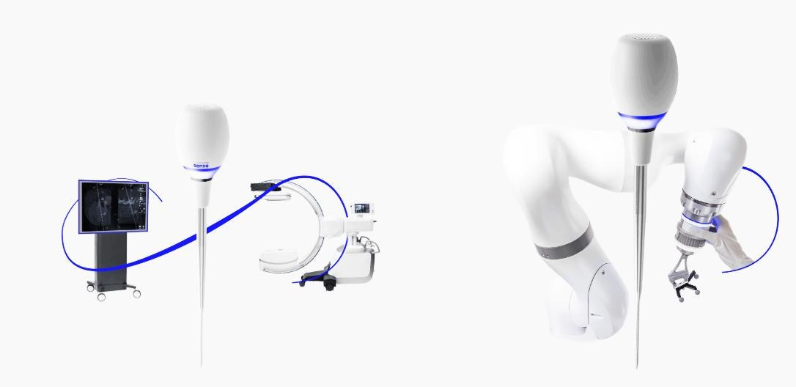

Van slim chirurgisch instrument tot intelligent systeem
Een instrument dat de chirurg moet waarschuwen voordat het mis gaat. Zo moet wervelkolomchirurgie veiliger worden, voor patiënt en operatieteam.

Over het project
Bij een wervelkolomfusie worden gaten voor schroeven vlak bij het ruggenmerg en grote bloedvaten geboord. Een afwijking van een paar millimeter kan tot complicaties en ingrijpende heroperaties leiden.
In het project SOGI ontwikkelen de partners een Smart Optical Guidance Instrument. Dit wordt een slim chirurgisch instrument dat de chirurg met behulp van niet-zichtbaar licht tijdens de ingreep op tijd moet waarschuwen, voordat het gat daadwerkelijk door een kritische structuur heen zou kunnen gaan. Zo moet het schade, heroperaties en onnodige röntgenstraling helpen voorkomen.
De partners ontwikkelen het instrument door tot een herbruikbaar en klinisch inzetbaar instrument, geschikt voor navigatie en operatierobots, en testen de concepten in vijf Nederlandse ziekenhuizen. Het project loopt van april 2026 tot en met december 2029.
SOGI wordt uitgevoerd binnen het programma OPZuid, met Stimulus als programmamanagement, en wordt medegefinancierd door de Europese Unie.
Partners
Penvoerder
Uitvoerende partijen

Contact
Wil je meer weten over het project of samenwerken in de kliniek? Neem contact op met Seecure Surgery Group in Eindhoven.